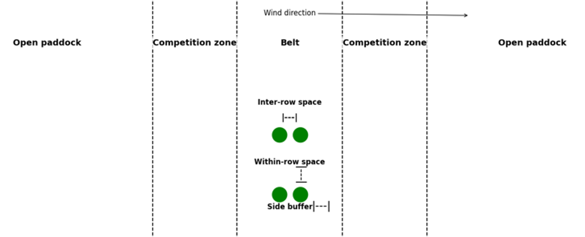
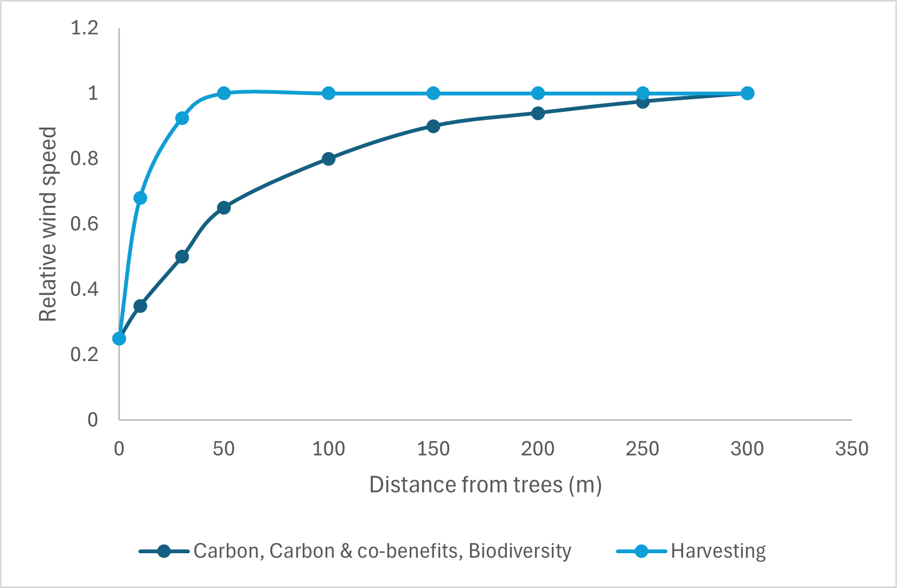

The tree belt refers to the area occupied by planted trees, including an adjacent side buffer.
The side buffer is treated as a no-cropping zone immediately next to the trees where production is negligible or uneconomic.
In this analysis, the side buffer is 4 m wide.
Competition Zone
The competition zone is the adjacent area that remains cropped or grazed under normal management.
Production in this zone can be influenced by both negative interactions (for example, water, light, and nutrient competition) and positive interactions (for example, shelter and micro-climate moderation).

Figure: Belt layout and spacing definitions used in this analysis.
Background
This section provides background information regarding on-farm tree planting.
Establishment Costs
The costs associated with tree plantations include establishment and maintenance costs, the opportunity cost of land planted to trees, and impacts to adjacent land.
Shelter
Trees can offer valuable shelter to livestock, reducing exposure to harsh weather, lowering energy expenditure, and improving survival rates, particularly for vulnerable animals such as twin-bearing ewes.
The economic benefits of shelter depend on livestock behaviour, mob priority and management, and paddock configuration. Benefit is higher when high-priority mobs are placed in sheltered paddocks and when paddock layout improves shelter access.

Adjacent Pasture and Crop Production
Tree belts can influence pasture and crop yields through competing effects. Yield can be reduced near trees due to shading and competition for water and nutrients, while further from trees wind protection can increase productivity.
In this analysis, production is reduced by 38% between 0 and 11.2 m from trees, and increased by 4% between 16 and 80 m from trees.
Harvested trees have half the interaction with adjacent land.
Carbon Sequestration
Planting trees can sequester carbon. Projects registered under the ACCU Scheme can generate tradable carbon credits (ACCUs).
Once generated, credits can be sold, held as a future asset, or inset on-farm to offset farm emissions. Establishing a carbon project can also involve monitoring, administration, and compliance costs.
Biodiversity
Tree plantations, particularly with native species, can enhance on-farm biodiversity. Emerging environmental markets may provide incentives and income streams for projects that deliver biodiversity outcomes.
Credit yields and prices can vary substantially by vegetation type and local demand. Past observations commonly report around 4-8 credits/ha and values often in the order of $2,300-$8,500 per credit.
Projects may also face setup and annual monitoring costs.
Biomass Production
Above-ground biomass can be harvested and sold for clean energy and biofuel pathways (for example, via pyrolysis).
Costs can include harvesting, on-farm handling, and road transport to processing facilities.
Micro-climate
At farm scale, trees can influence micro-climate through evapotranspiration, local humidity changes, and temperature moderation, and may contribute to small local rainfall changes.
In this tool context, a 10 km rainfall footprint is used and a 15% increase in tree cover is associated with a 2.6% rainfall increase assumption.
Substantial tree area may be required before measurable on-farm production gains are observed.
Groundwater and Salinity
Deep-rooted vegetation can reduce groundwater recharge and help limit the rise of saline groundwater when plantings are strategically located within contributing recharge areas. However, the magnitude and timing of the salinity benefit are highly site-specific, and substantial revegetation may be required before a measurable reduction in salinity spread occurs.
This tool assumes that salinity expands by 23 ha/year in the Central Wheatbelt and 43 ha/year in the Eastern Wheatbelt. The annual cost of saline land is valued at $123/ha in the Central Wheatbelt and $82/ha in the Eastern Wheatbelt. Tree planting in recharge zones reduces this expansion in proportion to the contributing recharge area influenced. WA Wheatbelt modelling found recharge reductions of about three to ten times the area occupied by oil-mallee canopy (Bennett et al. 2012).
Erosion
Vegetation can also support erosion control by stabilising soil and reducing wind and water impact. Financial outcomes are highly farm-specific and depend on local conditions and existing management practices.
In this analysis, the benefits of erosion mitigation are only allocated to belt plantings.
The value benefit was estimated based on reduced erosion risk allowing an additional 250 kg DM per hectare to be grazed.
Quantifying Whole-Farm Interactions
The physical effects of livestock shelter, adjacent pasture and crop production, salinity, erosion, and micro-climate are converted into annual economic values using AFO (Australian Farm Optimisation) model, an advanced whole-farm bio-economic optimisation model.
This tool uses AFO-derived values for the relevant location, soil, planting design, and planting area. It does not run the full AFO model in the browser.